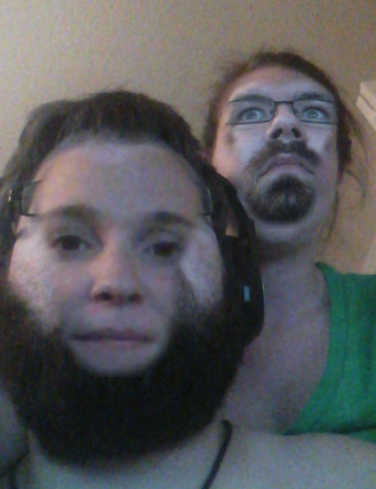
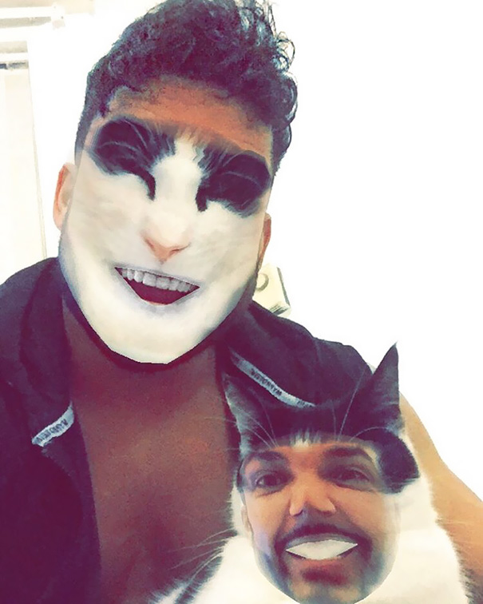
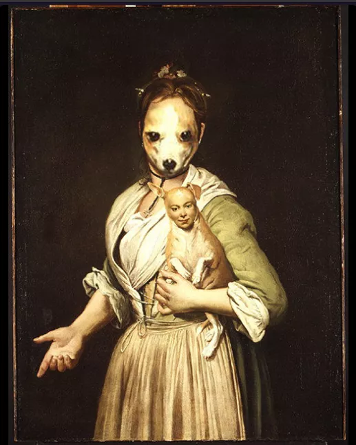
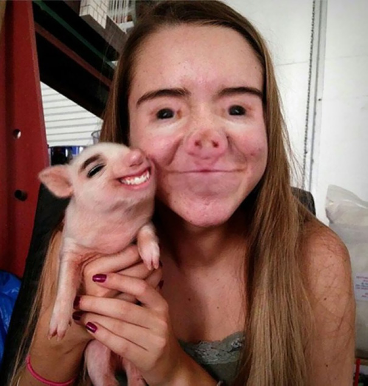
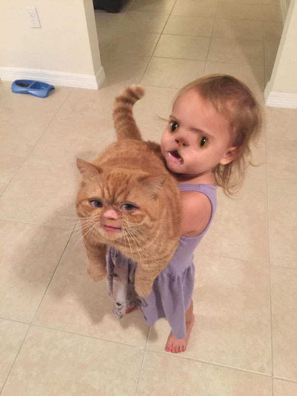
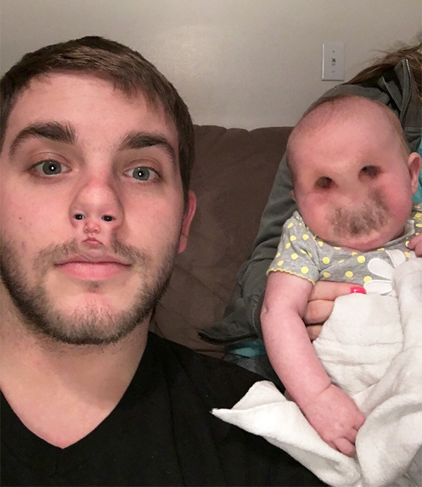
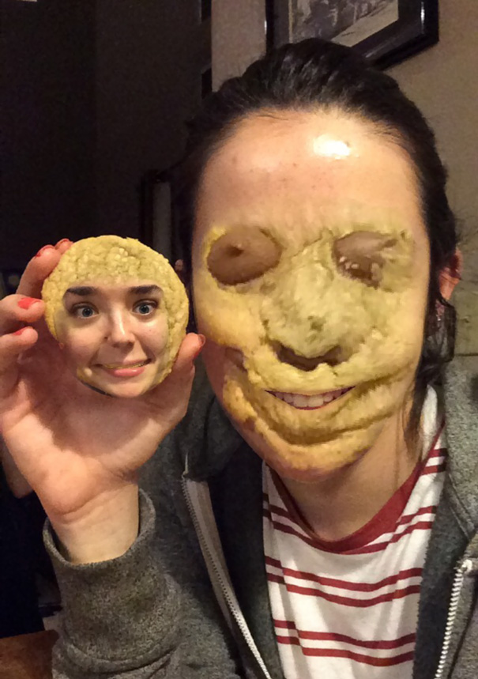
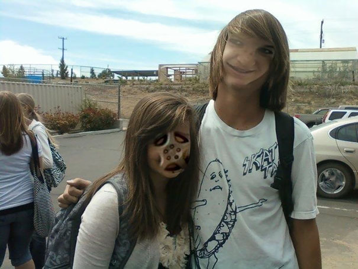
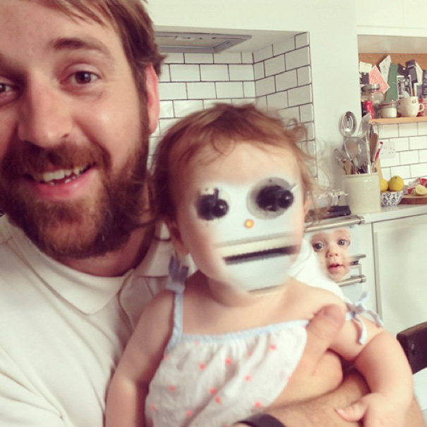

2. The Couple Swap
3. Everybody Wants to Be a Cat
4. The Artsy Face Swap
5. Two Babes one Swap
6. The Pet Swap
7. Bad Nose Job
8. The Cookie Monster
9. Find Her Face
10. Robot Baby
If you feel as if you've found a new purpose in life watching face swaps join the Reddit face swap community for more pictures!